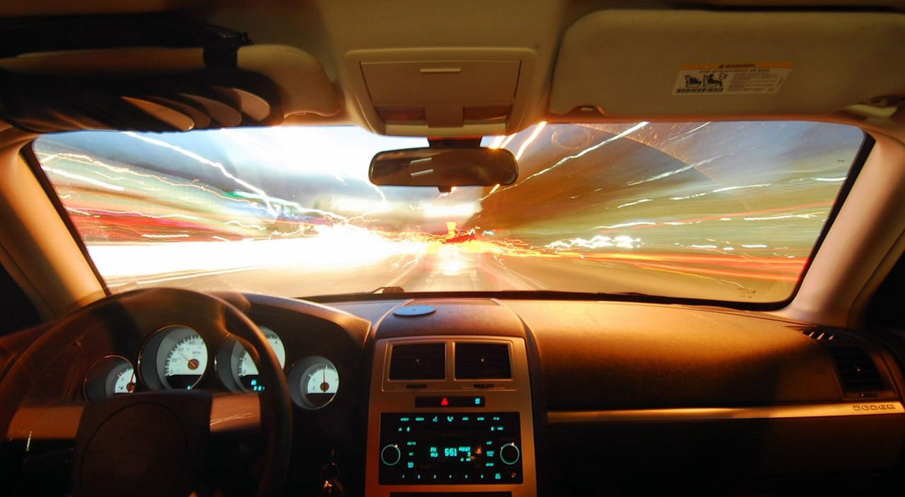
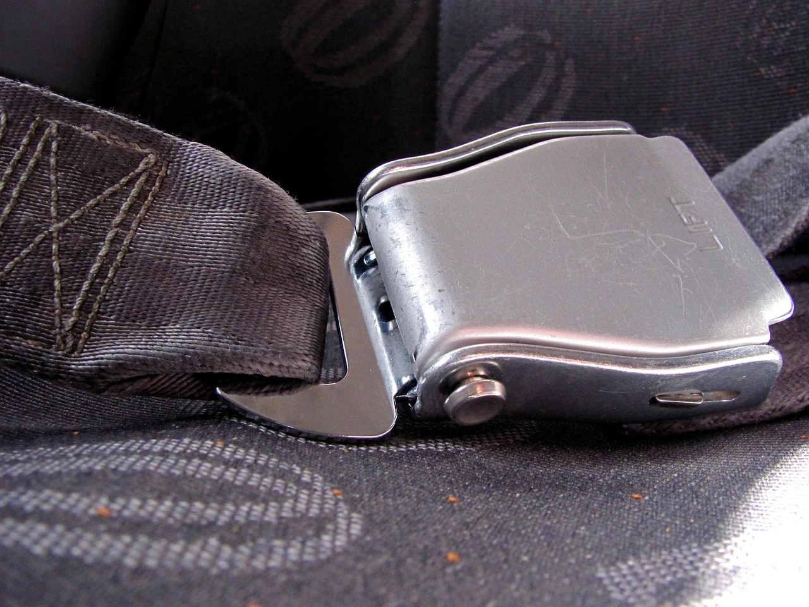
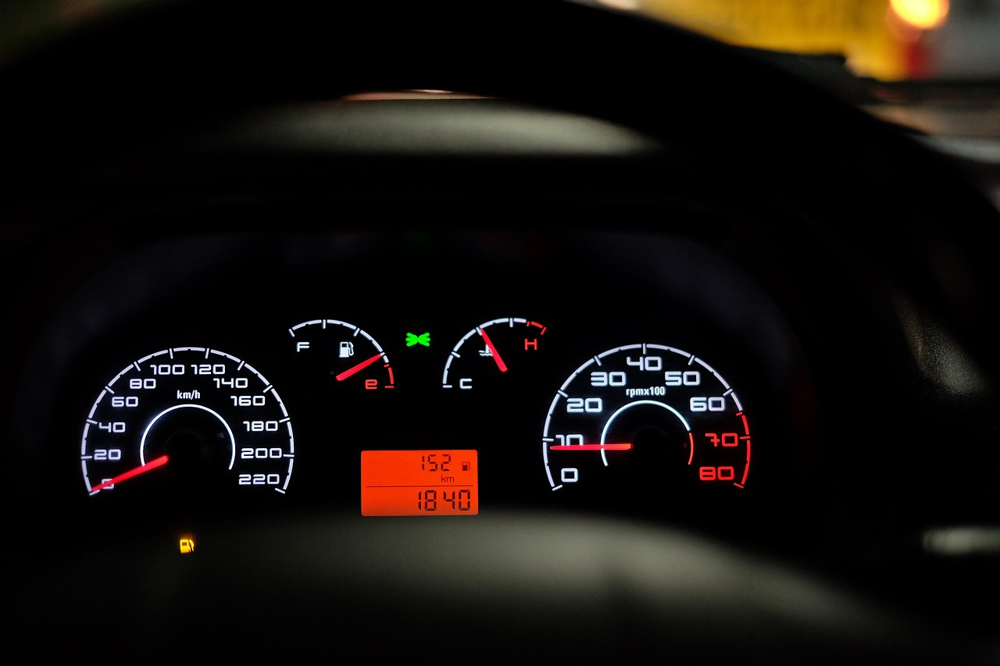
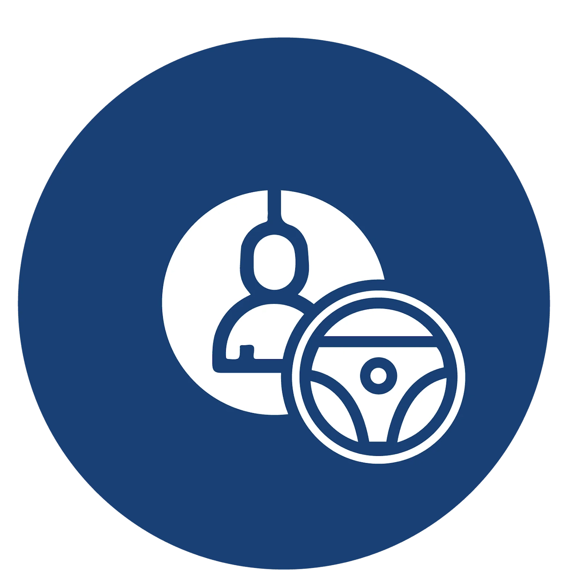

En VivoPESV · Autogestión
EN VIVOEN VIVOEN VIVO
Tu PESV ya está en marcha.
FALTA ELINFORME
el que exige el Ministerio de Trabajo




 Inspecciones
InspeccionesFlota

Conductores Mantenimiento
Mantenimiento¿TODO A MANO?

Dr. Yezid Ricaurte
Abogado · Consultor · Conferencista · 27 años de trayectoria

Tu informe, con un solo clic
3DE OCTUBRE
EN VIVO
Sábado · 10:00 a. m. (Hora Colombia)
Reservar cupo gratis →
yezidricaurte.com